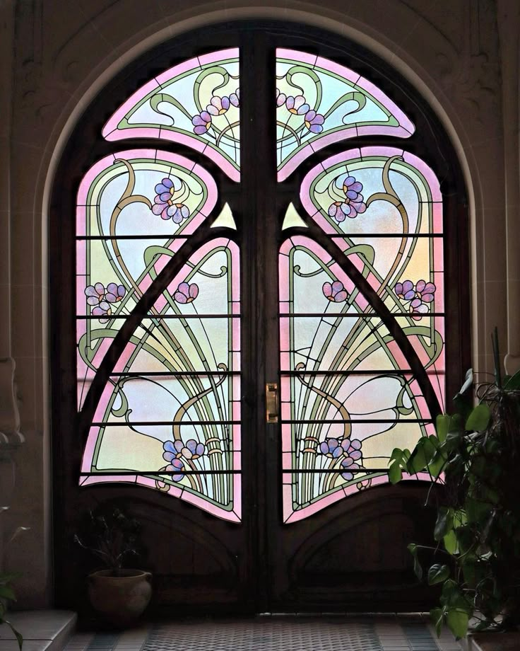
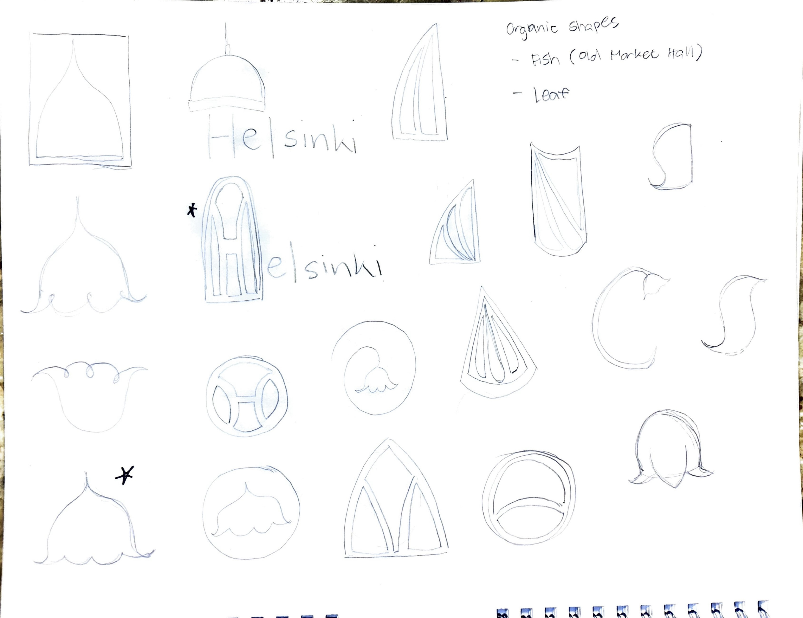
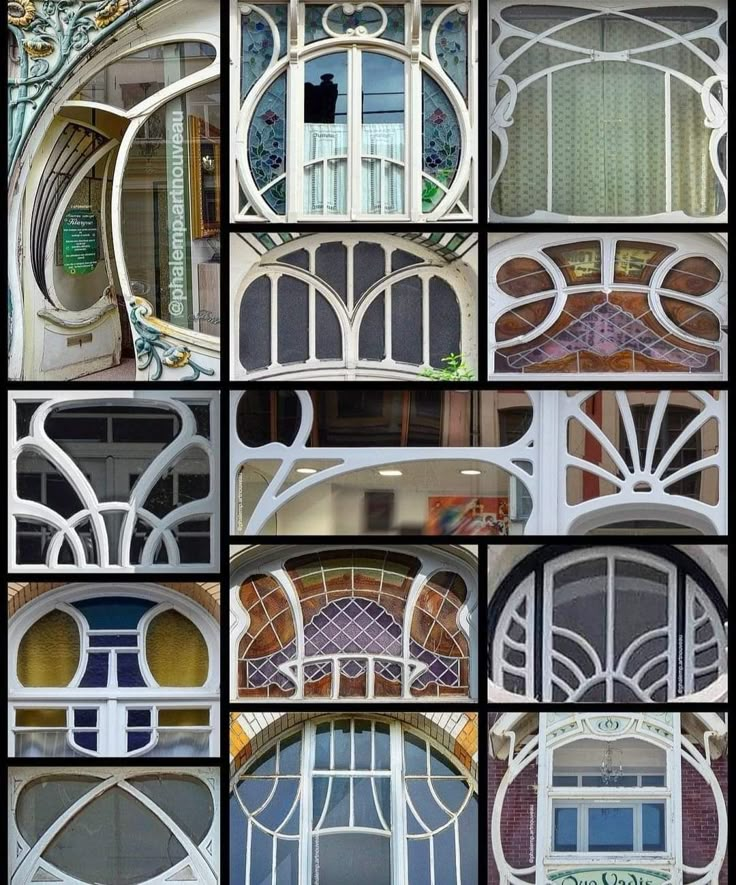
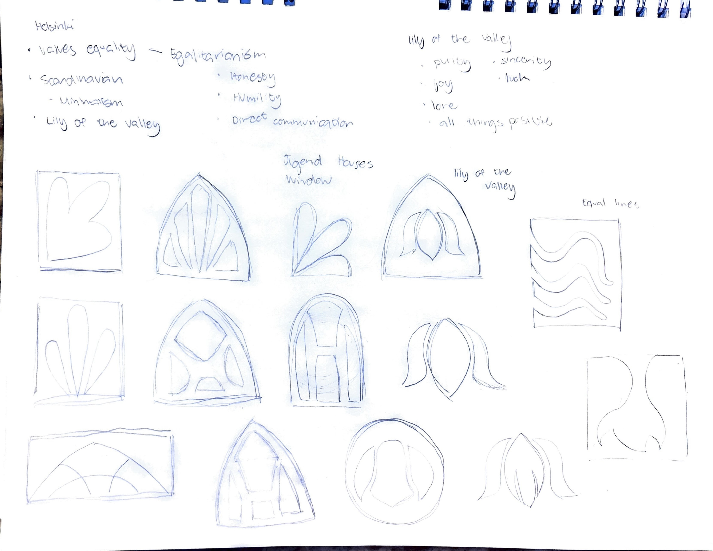
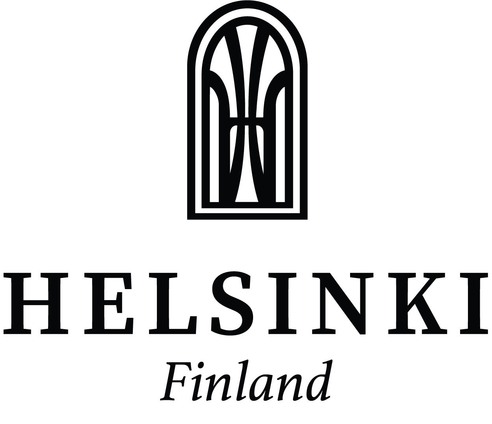
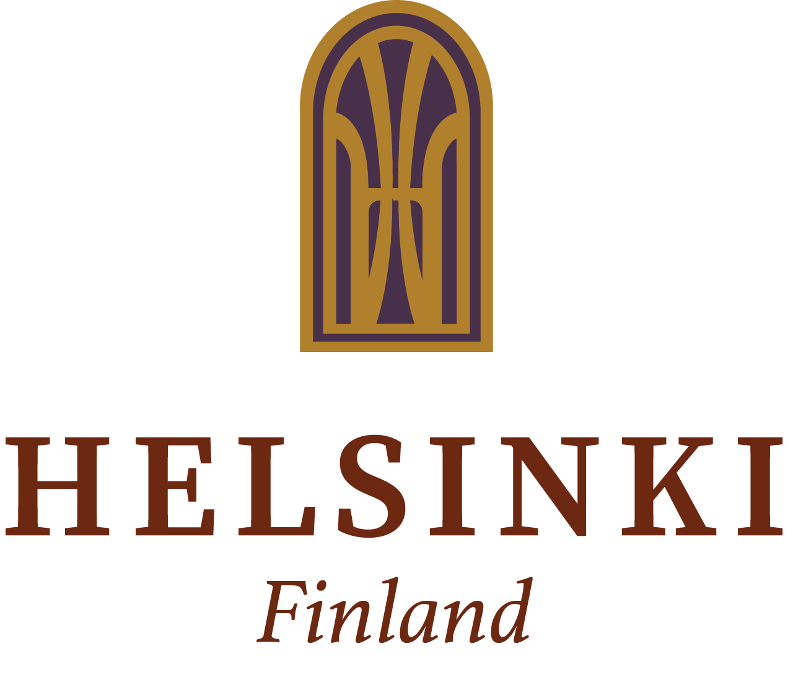
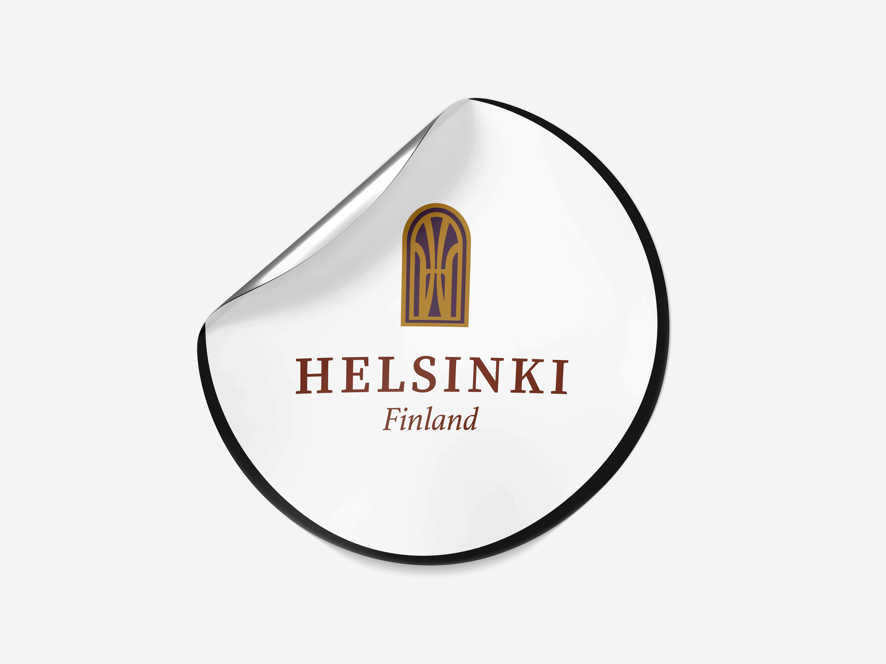
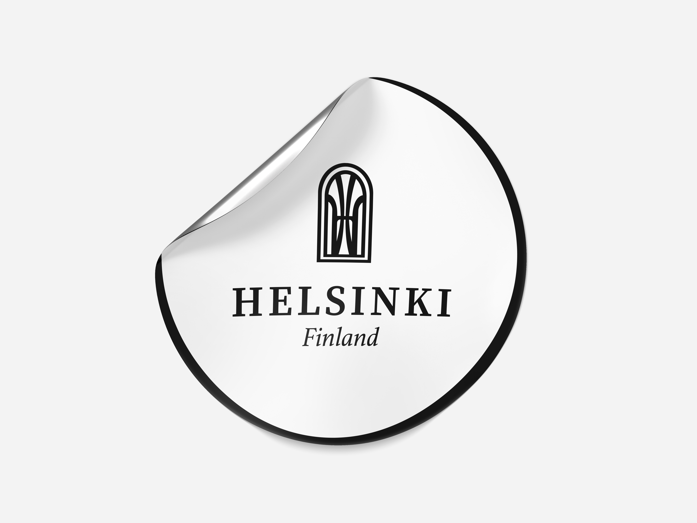
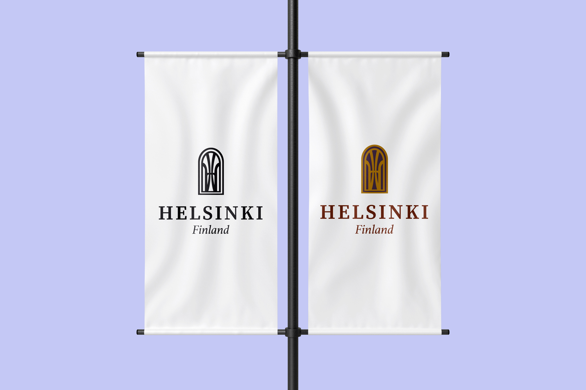

TOURISM LOGO
For my ART125 class, we were tasked with creating or recreating a logo for a city we wanted to represent. I chose Helsinki, Finland as my city of focus because of its unique blend of modernity and nature, as well as its rich cultural heritage.
The project began with extensive research into Finland’s culture in order to understand the essence of the city. I initially explored Finnish folklore, myths, and superstitions as potential sources of inspiration for the logo. However, I discovered that Finland is deeply influenced by modernism, expressed in a way that maintains strong style and authenticity rooted in its early design influences. Through this research, I learned about Helsinki’s architectural styles which were particularly its Art Nouveau influences that ultimately played a significant role in shaping my design approach.
While sketching, I took much inspiration with the arched windows commonly found in Helsinki’s Art Nouveau buildings. These windows often feature organic, flowing shapes that mimic natural forms, which I found to be a beautiful representation of the city’s connection to nature. I incorporated these shapes into my logo design, aiming to capture the elegance and uniqueness of Helsinki’s architectural heritage.
I chose to use a window as the central element of the logo because it symbolizes connection, perspective, and openness. A window functions as a boundary between interior and exterior spaces, much like how the people of Helsinki experience a close relationship between the built environment and nature. In a city where architecture is designed to coexist harmoniously with natural landscapes, the window becomes a metaphor for viewing, appreciating, and remaining connected to the surrounding environment.
ABOUT HELSINKI
Helsinki is the capital and largest city of Finland, close to Estonia and Russia. It is a vibrant city known for its clean environment, and unique blend of Nordic and Eastern European influences.
Despite being a capital, Helsinki maintains a relaxed, small-city atmosphere, with a strong focus on sustainability, smart city development, and nature. Helsinki combines history, innovation, and natural beauty, making it one of the most livable and forward-thinking cities in Europe.








